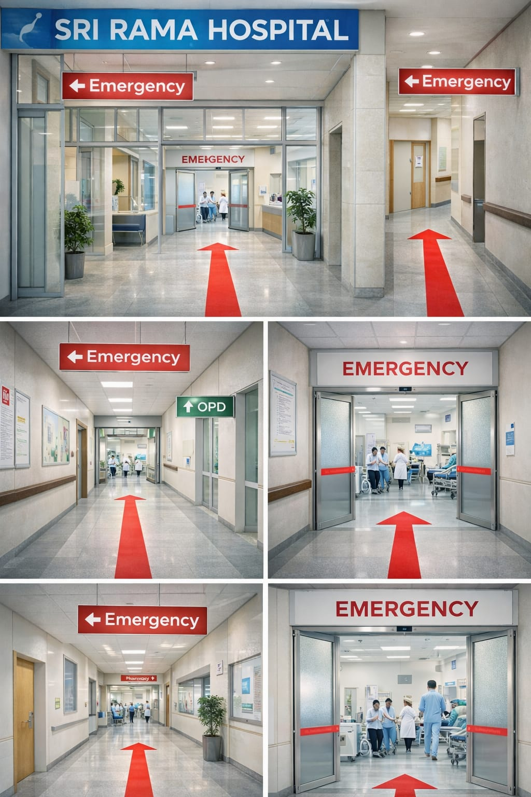
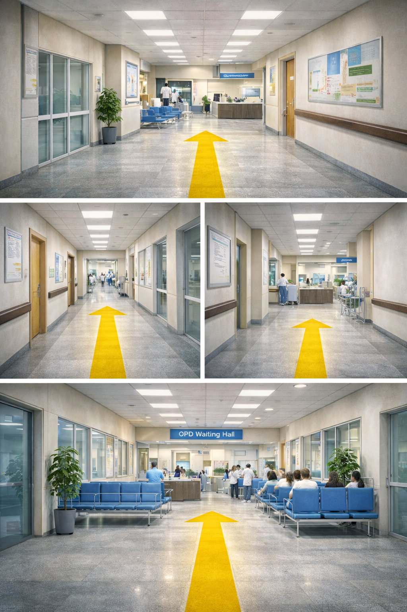
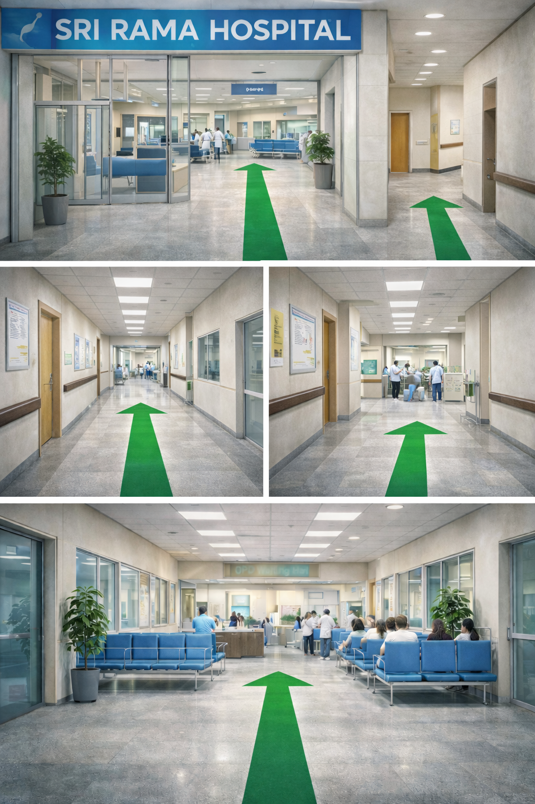
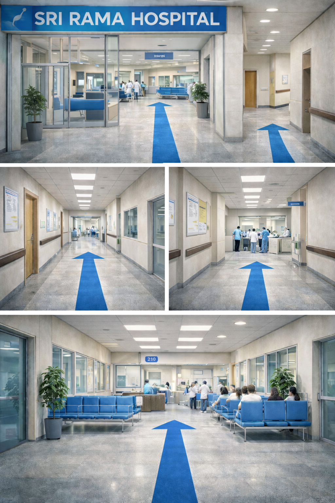
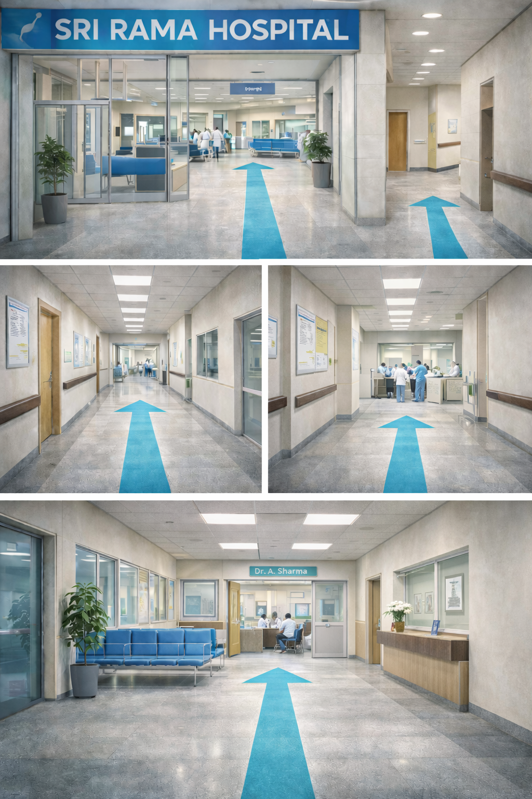
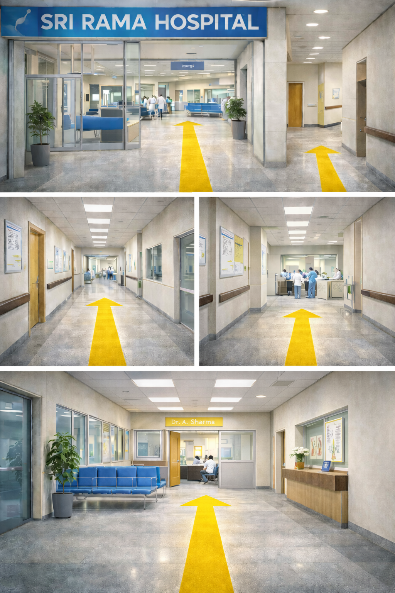

🚑 Emergencyआपातकालತುರ್ತುஅவசரம்ఎమర్జెన్సీ 24×7
Incharge: Dr. Kavya S
प्रभारी: डॉ. काव्या S
ಪ್ರಭಾರಿ: ಡಾ. ಕಾವ್ಯಾ S
பொறுப்பு: டாக்டர் கவ்யா S
ఇంచార్జ్: డా. కావ్యా S
Emergency – Fastest Route
आपातकाल – सबसे तेज़ मार्ग
ತುರ್ತು – ವೇಗದ ಮಾರ್ಗ
அவசரம் – விரைவான வழி
ఎమర్జెన్సీ – వేగవంతమైన మార్గం
⚡ Fastest Routeसबसे तेज़ मार्गವೇಗದ ಮಾರ್ಗவிரைவான வழிవేగవంతమైన మార్గం
Entrance → Follow Red arrows → Emergency Room (Ground Floor)
प्रवेश → लाल तीर → आपातकाल कक्ष (भू-तल)
ಪ್ರವೇಶ → ಕೆಂಪು ಬಾಣ → ತುರ್ತು ಕೊಠಡಿ (ನೆಲ ಮಹಡಿ)
நுழைவு → சிவப்பு அம்புகள் → அவசர அறை (தரை தளம்)
ప్రవేశం → ఎరుపు బాణాలు → ఎమర్జెన్సీ గది (గ్రౌండ్ ఫ్లోర్)

Scroll / pinch to zoom
स्क्रॉल करें / ज़ूम करें
ಸ್ಕ್ರೋಲ್ ಮಾಡಿ / ಜೂಮ್ ಮಾಡಿ
ஸ்க்ரோல் / ஜூம் செய்யவும்
స్క్రోల్ / జూమ్ చేయండి
🩺 OPDओपीडीಒಪಿಡಿOPDఓపీడి
Incharge: Dr. Manjunath R
प्रभारी: डॉ. मंजुनाथ R
ಪ್ರಭಾರಿ: ಡಾ. ಮಂಜುನಾಥ R
பொறுப்பு: டாக்டர் மஞ்சுநாத் R
ఇంచార్జ్: డా. మంజునాథ్ R
Available Till 4:00 PM
शाम 4:00 बजे तक उपलब्ध
ಸಂಜೆ 4:00 ರವರೆಗೆ ಲಭ್ಯವಿದೆ
மாலை 4:00 மணி வரை கிடைக்கும்
సాయంత్రం 4:00 వరకు అందుబాటులో
OPD Directions
ओपीडी दिशा
ಒಪಿಡಿ ದಿಕ್ಕು
OPD வழிமுறை
ఓపీడి దిశలు
Reception → Lift A → 1st Floor → OPD
रिसेप्शन → लिफ्ट A → पहली मंजिल → ओपीडी
ಸ್ವಾಗತ → ಲಿಫ್ಟ್ A → 1ನೇ ಮಹಡಿ → ಒಪಿಡಿ
வரவேற்பு → லிப்ட் A → 1வது மாடி → OPD
రిసెప్షన్ → లిఫ్ట్ A → 1వ అంతస్తు → ఓపీడి

Scroll / pinch to zoom
स्क्रॉल करें / ज़ूम करें
ಸ್ಕ್ರೋಲ್ ಮಾಡಿ / ಜೂಮ್ ಮಾಡಿ
ஸ்க்ரோல் / ஜூம் செய்யவும்
స్క్రోల్ / జూమ్ చేయండి
💊 Pharmacyफार्मेसीಫಾರ್ಮಸಿமருந்தகம்ఫార్మసీ
Incharge: Mr. Prakash M
प्रभारी: श्री प्रकाश M
ಪ್ರಭಾರಿ: ಶ್ರೀ ಪ್ರಕಾಶ M
பொறுப்பு: திரு. பிரகாஷ் M
ఇంచార్జ్: శ్రీ ప్రకాష్ M
Pharmacy Directions
फार्मेसी दिशा
ಫಾರ್ಮಸಿ ದಿಕ್ಕು
மருந்தகம் வழிமுறை
ఫార్మసీ దిశలు
Reception → Left Corridor → Pharmacy Counter (Ground Floor)
रिसेप्शन → बायां गलियारा → फार्मेसी काउंटर (भू-तल)
ಸ್ವಾಗತ → ಎಡ ದಾರಿ → ಫಾರ್ಮಸಿ ಕೌಂಟರ್ (ನೆಲ ಮಹಡಿ)
வரவேற்பு → இடது வழி → மருந்தக கவுண்டர் (தரை தளம்)
రిసెప్షన్ → ఎడమ దారి → ఫార్మసీ కౌంటర్ (గ్రౌండ్ ఫ్లోర్)

Scroll / pinch to zoom
स्क्रॉल करें / ज़ूम करें
ಸ್ಕ್ರೋಲ್ ಮಾಡಿ / ಜೂಮ್ ಮಾಡಿ
ஸ்க்ரோல் / ஜூம் செய்யவும்
స్క్రోల్ / జూమ్ చేయండి
🧪 Lab (Blood Tests)लैब (रक्त परीक्षण)ಲ್ಯಾಬ್ (ರಕ್ತ ಪರೀಕ್ಷೆ)ஆய்வகம் (இரத்த பரிசோதனை)ల్యాబ్ (రక్త పరీక్షలు)
Incharge: Dr. Shalini B
प्रभारी: डॉ. शालिनी B
ಪ್ರಭಾರಿ: ಡಾ. ಶಾಲಿನಿ B
பொறுப்பு: டாக்டர் ஷாலினி B
ఇంచార్జ్: డా. శాలಿನಿ B
Available Till 5:30 PM
शाम 5:30 बजे तक उपलब्ध
ಸಂಜೆ 5:30 ರವರೆಗೆ ಲಭ್ಯವಿದೆ
மாலை 5:30 மணி வரை கிடைக்கும்
సాయంత్రం 5:30 వరకు అందుబాటులో
Lab Directions
लैब दिशा
ಲ್ಯಾಬ್ ದಿಕ್ಕು
ஆய்ವகம் வழிமுறை
ల్యాబ్ దిశలు
Lift C → 2nd Floor → Lab Room 210 (Blood Sample Collection)
लिफ्ट C → दूसरी मंजिल → लैब कक्ष 210 (रक्त नमूना संग्रह)
ಲಿಫ್ಟ್ C → 2ನೇ ಮಹಡಿ → ಲ್ಯಾಬ್ ಕೊಠಡಿ 210 (ರಕ್ತ ಮಾದರಿ ಸಂಗ್ರಹ)
லிப்ட் C → 2வது மாடி → ஆய்வக அறை 210 (இரத்த மாதிரி சேகரிப்பு)
లిఫ్ట్ C → 2వ అంతస్తు → ల్యాబ్ గది 210 (రక్త నమూనా సేకరణ)

Scroll / pinch to zoom
स्क्रॉल करें / ज़ूम करें
ಸ್ಕ್ರೋಲ್ ಮಾಡಿ / ಜೂಮ್ ಮಾಡಿ
ஸ்க்ரோல் / ஜூம் செய்யவும்
స్క్రోల్ / జూమ్ చేయండి
👨⚕️ Dr. A. Sharma (Cardiology) डॉ. ए. शर्मा (हृदय रोग) ಡಾ. ಎ. ಶರ್ಮಾ (ಹೃದಯ ವಿಜ್ಞಾನ) டாக்டர் ஏ. சர்மா (இதய மருத்துவம்) డా. ఏ. శర్మ (హృదయ వైద్యం)
Cabin 205 – 2nd Floor कक्ष 205 – दूसरी मंजिल ಕೊಠಡಿ 205 – 2ನೇ ಮಹಡಿ அறை 205 – 2வது மாடி గది 205 – 2వ అంతస్తు
Available till 1:00 PM दोपहर 1:00 बजे तक उपलब्ध ಮಧ್ಯಾಹ್ನ 1:00 ರವರೆಗೆ ಲಭ್ಯವಿದೆ பிற்பகல் 1:00 மணி வரை கிடைக்கும் మధ్యాహ్నం 1:00 వరకు అందుబాటులో
Doctor Cabin Directions
डॉक्टर कक्ष दिशा
ವೈದ್ಯರ ಕೊಠಡಿ ದಿಕ್ಕು
மருத்துவர் அறை வழிமுறை
డాక్టర్ గది దిశలు
Reception → Lift B → 2nd Floor → Cabin 205 (Cardiology)
रिसेप्शन → लिफ्ट B → दूसरी मंजिल → कक्ष 205 (हृदय रोग)
ಸ್ವಾಗತ → ಲಿಫ್ಟ್ B → 2ನೇ ಮಹಡಿ → ಕೊಠಡಿ 205 (ಹೃದಯ ವಿಭಾಗ)
வரவேற்பு → லிப்ட் B → 2வது மாடி → அறை 205 (இதய மருத்துவம்)
రిసెప్షన్ → లిఫ్ట్ B → 2వ అంతస్తు → గది 205 (హృదయ వైద్యం)

Scroll / pinch to zoom
स्क्रॉल करें / ज़ूम करें
ಸ್ಕ್ರೋಲ್ ಮಾಡಿ / ಜೂಮ್ ಮಾಡಿ
ஸ்க்ரோல் / ஜூம் செய்யவும்
స్క్రోల్ / జూమ్ చేయండి
👨⚕️ Dr. R. Khan (Orthopedics) डॉ. आर. खान (अस्थि रोग) ಡಾ. ಆರ್. ಖಾನ್ (ಅಸ್ಥಿ ವಿಜ್ಞಾನ) டாக்டர் ஆர். கான் (எலும்பியல்) డా. ఆర్. ఖాన్ (అస్థి వైద్యం)
Cabin 112 – 1st Floor कक्ष 112 – पहली मंजिल ಕೊಠಡಿ 112 – 1ನೇ ಮಹಡಿ அறை 112 – 1வது மாடி గది 112 – 1వ అంతస్తు
Next available: Tomorrow 10:00 AM अगला उपलब्ध: कल सुबह 10:00 बजे ಮುಂದಿನ ಲಭ್ಯತೆ: ನಾಳೆ ಬೆಳಿಗ್ಗೆ 10:00 ಗಂಟೆಗೆ அடுத்து கிடைக்கும்: நாளை காலை 10:00 மணி తరువాత అందుబాటులో: రేపు ఉదయం 10:00 గంటలకు
Doctor Cabin Directions
डॉक्टर कक्ष दिशा
ವೈದ್ಯರ ಕೊಠಡಿ ದಿಕ್ಕು
மருத்துவர் அறை வழிமுறை
డాక్టర్ గది దిశలు
Entrance → Lift A → 1st Floor → Cabin 112 (Orthopedics)
प्रवेश द्वार → लिफ्ट A → पहली मंजिल → कक्ष 112 (अस्थि रोग)
ಪ್ರವೇಶ → ಲಿಫ್ಟ್ A → 1ನೇ ಮಹಡಿ → ಕೊಠಡಿ 112 (ಅಸ್ಥಿ ವಿಭಾಗ)
நுழைவாயில் → லிப்ட் A → 1வது மாடி → அறை 112 (எலும்பியல்)
ప్రవేశం → లిఫ్ట్ A → 1వ అంతస్తు → గది 112 (అస్థి వైద్యం)

Scroll / pinch to zoom
स्क्रॉल करें / ज़ूम करें
ಸ್ಕ್ರೋಲ್ ಮಾಡಿ / ಜೂಮ್ ಮಾಡಿ
ஸ்க்ரோல் / ஜூம் செய்யவும்
స్క్రోల్ / జూమ్ చేయండి
Patient Login मरीज लॉगिन ರೋಗಿ ಲಾಗಿನ್ நோயாளர் உள்நுழைவு రోగి లాగిన్
• Lab reports • OPD token • Doctor timings. Enter ID (101-105) and click Get Report.
📍 QR Code Placement Strategy QR कोड प्लेसमेंट रणनीति QR ಕೋಡ್ ನಿಯೋಜನೆ ತಂತ್ರ QR குறியீடு வைக்கும் உத்தி QR కోడ్ ప్లేస్మెంట్ వ్యూహం
- **Main Gate/Entrance:** For first-time visitors to get overall map and directions.
- **मुख्य द्वार/प्रवेश:** पहली बार आने वालों के लिए समग्र नक्शा और दिशा-निर्देश प्राप्त करने हेतु।
- **ಮುಖ್ಯ ಗೇಟ್/ಪ್ರವೇಶ:** ಮೊದಲ ಬಾರಿಗೆ ಭೇಟಿ ನೀಡುವವರಿಗೆ ಒಟ್ಟಾರೆ ನಕ್ಷೆ ಮತ್ತು ದಿಕ್ಕುಗಳನ್ನು ಪಡೆಯಲು.
- **பிரதான வாயில்/நுழைவு:** முதல் முறை வருபவர்கள் ஒட்டுமொத்த வரைபடம் மற்றும் வழிகாட்டியைப் பெற.
- **ప్రధాన గేట్/ప్రవేశం:** మొదటిసారి వచ్చే సందర్శకులు మొత్తం మ్యాప్ మరియు దిశలను పొందడానికి.
- **Lift/Staircase Area:** For inter-floor navigation (e.g., from 1st floor to 2nd floor lab).
- **लिफ्ट/सीढ़ी क्षेत्र:** अंतर-मंजिल नेविगेशन के लिए (जैसे, पहली मंजिल से दूसरी मंजिल लैब तक)।
- **ಲಿಫ್ಟ್/ಮೆಟ್ಟಿಲು ಪ್ರದೇಶ:** ಅಂತರ್-ಮಹಡಿ ನ್ಯಾವಿಗೇಷನ್ಗಾಗಿ (ಉದಾ, 1ನೇ ಮಹಡಿಯಿಂದ 2ನೇ ಮಹಡಿಯ ಲ್ಯಾಬ್ಗೆ).
- **லிப்ட்/மாடிப்படி பகுதி:** மாடிகளுக்கு இடையிலான வழிசெலுத்தலுக்காக (எ.கா., 1வது மாடியிலிருந்து 2வது மாடி ஆய்வகத்திற்கு).
- **లిఫ్ట్/మెట్ల ప్రాంతం:** అంతస్తుల మధ్య నావిగేషన్ కోసం (ఉదా. 1వ అంతస్తు నుండి 2వ అంతస్తు ల్యాబ్కు).
- **OPD Waiting Hall:** Quick access to token status and doctor availability.
- **ओपीडी प्रतीक्षालय:** टोकन स्थिति और डॉक्टर की उपलब्धता तक त्वरित पहुंच के लिए।
- **ಒಪಿಡಿ ಕಾಯುವ ಹಾಲ್:** ಟೋಕನ್ ಸ್ಥಿತಿ ಮತ್ತು ವೈದ್ಯರ ಲಭ್ಯತೆಗೆ ತ್ವರಿತ ಪ್ರವೇಶಕ್ಕಾಗಿ.
- **OPD காத்திருப்பு கூடம்:** டோக்கன் நிலை மற்றும் மருத்துவர் கிடைக்கும் நேரத்தை விரைவாக அணுக.
- **ఓపీడి వెయిటింగ్ హాల్:** టోకెన్ స్థితి మరియు డాక్టర్ లభ్యతకు త్వరిత ప్రాప్యత కోసం.
- **Pharmacy/Lab Counter:** For easy report collection and post-consultation directions.
- **फार्मेसी/लैब काउंटर:** आसान रिपोर्ट संग्रह और परामर्श के बाद की दिशाओं के लिए।
- **ಫಾರ್ಮಸಿ/ಲ್ಯಾಬ್ ಕೌಂಟರ್:** ಸುಲಭ ವರದಿ ಸಂಗ್ರಹಣೆ ಮತ್ತು ಸಮಾಲೋಚನೆಯ ನಂತರದ ದಿಕ್ಕುಗಳಿಗಾಗಿ.
- **மருந்தகம்/ஆய்வக கவுண்டர்:** எளிதான அறிக்கை சேகரிப்பு மற்றும் ஆலோசனைக்கு பிந்தைய வழிகாட்டலுக்காக.
- **ఫార్మసీ/ల్యాబ్ కౌంటర్:** సులభ నివేదిక సేకరణ మరియు సంప్రదింపుల తర్వాత దిశల కోసం.